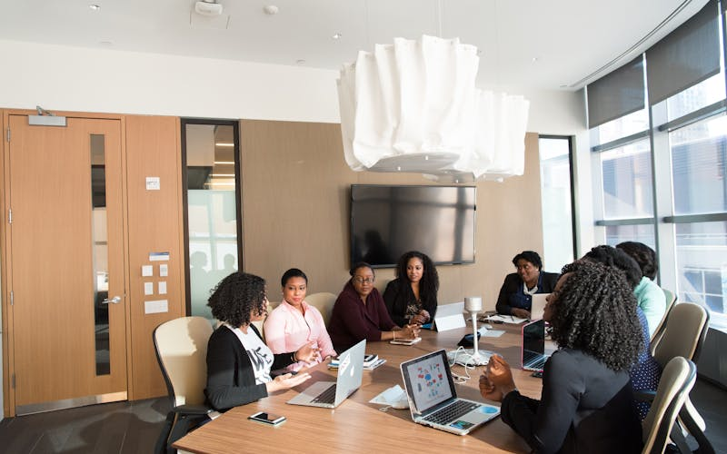
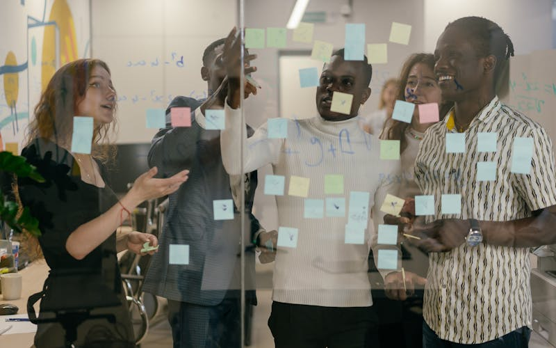

The Executive Alignment Sprint
Best for: Exec teams with competing priorities and no agreed decision-making mechanism
A structured, full-day session that takes a leadership team from competing agendas to a single, written set of priorities with named owners and 30-day execution commitments.
- Agreed priorities - written, ranked, owned
- Decision rights clarified at every level
- 30-day execution commitments with deadlines
The Strategy & Vision Offsite
Best for: Annual planning, strategic reset, mid-year pivot, or refreshing senior leadership direction
A 1.5 to 2-day intensive that moves beyond generic strategy conversations. Your leadership team aligns around a shared vision and produces a clear actionable plan with explicit trade-offs.
- Aligned strategic direction with commitment to execution
- One-page strategy summary with not-doing list
- Cross-functional commitment log with review cadence
The Strategy Sprint
Best for: Leadership teams kicking off a new initiative, aligning on direction, or turning vision into a concrete, owned roadmap
A high-intensity structured workshop that takes your leadership team from an ambitious long-term goal through to a concrete roadmap with named owners — in one or two days. Six time-boxed exercises, silent-first ideation to prevent groupthink, and a designated Decider to ensure real choices get made.
- Written long-term goal with measurable success metrics
- Strategy concepts created, evaluated, and selected
- Visual roadmap with named owners and 30-day action plan
- Full Decision Log documenting every choice and rationale
The Decision-Rights Reset
Best for: Teams where decisions are slow, political, or get unmade after the meeting
A focused half-day session that maps the decision landscape, clarifies who decides what, and installs protocols that prevent the corridor reversal of agreed decisions.
- Mapped decision landscape: who decides what, at what level
- Agreed decision protocols and escalation rules
- Decision health score - baseline for improvement
Transformation Alignment
Best for: Change programmes where leadership commitment is uneven or unstated
A full-day session that aligns the leadership team around the transformation - with shared success criteria, named risk owners, and a sponsorship commitment log.
- Shared definition of success at 30, 90, and 180 days
- Named risks and mitigation owners
- Sponsorship and communication commitment log

Problem-Solving & Innovation
Best for: Complex challenges, growth opportunities, or stalled initiatives needing fresh thinking
A high-energy facilitated session that generates fresh insights and actionable decisions using structured creativity techniques to unlock team intelligence.
- Root cause analysis and clear problem definition
- Ranked solution options with trade-offs named
- Ready-to-act decision with owner and timeline
Team-Alignment Retreat
Best for: Teams needing to reconnect, rebuild trust, or clarify roles and shared direction
A facilitated retreat that brings key stakeholders together to reconnect, resolve misalignment, deepen trust, and clarify roles through structured dialogue and commitment.
- Enhanced trust and psychological safety
- Role clarity and agreed operating principles
- Unified direction with shared commitments
Planning & Execution
Best for: Rolling out initiatives, programmes, or transformation with clear accountability
Helps teams build actionable roadmaps with clear ownership. We facilitate the hard conversations about resourcing, dependencies, and sequencing - so your plan survives contact with reality.
- Actionable roadmap with named responsibilities
- Dependencies and blockers surfaced and resolved
- Clear ownership and timelines for next steps
Leadership & Board Sessions
Best for: Boards, C-suite, and senior leadership requiring high-stakes structured dialogue
Tailored facilitation for boards and senior leadership where the stakes are highest and the dynamics most complex. Structured dialogue that leads to confident decisions - not polite avoidance.
- Strategic alignment with documented decisions
- Stakeholder buy-in with visible commitment
- Clear next steps with governance agreed
Design Sprint
Best for: New products, services, or processes that need rapid validation before committing resources
A compressed, high-intensity sprint that takes a challenge from concept to tested prototype in days, not months. Based on proven design sprint methodology, adapted for leadership teams making strategic bets.
- Validated prototype tested with real stakeholders
- Clear go/no-go decision with evidence, not opinion
- Weeks of debate compressed into days of action
Retrospectives & Learning Forums
Best for: Post-project reflection, after major change, or building a continuous improvement culture
Facilitated reflection sessions that draw lessons, celebrate successes, and build improved future performance. A safe, structured space to be honest about what worked and what the organisation should carry forward.
- Documented lessons with actionable recommendations
- Successes celebrated and contributions recognised
- Improvement commitments with owners assigned